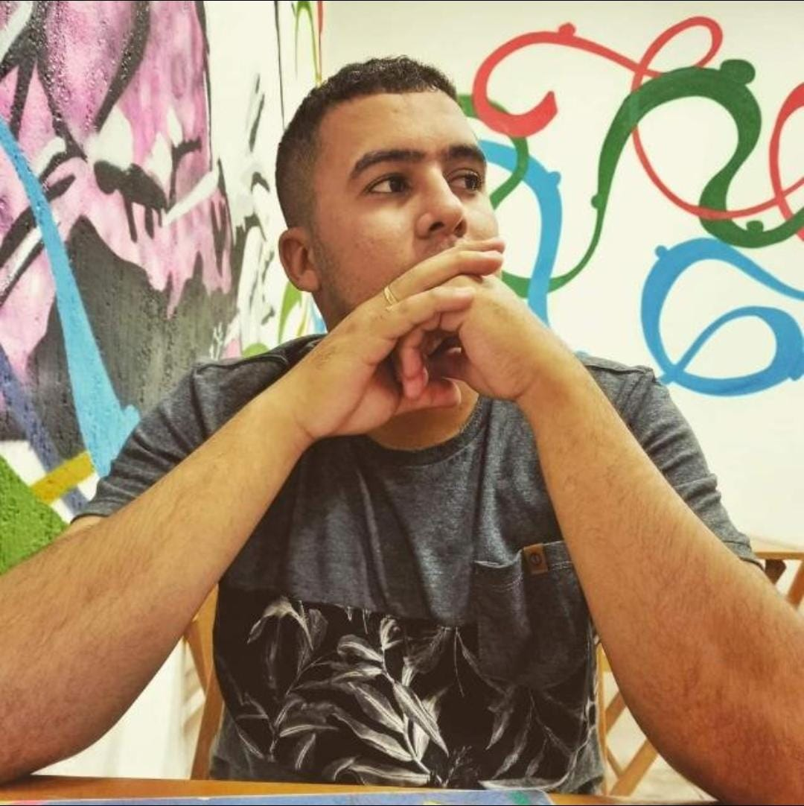

Tecnologia da Informação
(81) 9 84089409 / (81) 988496663
thiagomarques506@gmail.com
Sou um profissional apaixonado por tecnologia da informação, com experiência em áreas como suporte técnico e vigilância eletrônica. Ensino Médio pela EREM Professor Fernando Mota, atualmente estou cursando o segundo módulo do curso técnico na ETE Cícero Dias. Ao longo de minha carreira, desenvolvi habilidades como comunicação eficaz, trabalho em equipe e resolução de problemas. Possuo certificações em Microsoft Word, atendimento ao público e CFTV (Circuito Fechado de Televisão). Além disso, tenho conhecimentos básicos de inglês e intermediários em espanhol. Estou em busca de oportunidades para aplicar minhas habilidades.
Ensino Médio, EREM Professor Fernando Mota
Conclusão: 12/2017
Técnico, ETE Cícero Dias
Cursando 2º módulo
Período: 08/2023 - 12/2024
SOLDADO, Força Aérea Brasileira
01/08/2019 - 31/08/2023
SUPORTE TÉCNICO, Hospital de Ávila
04/01/2024 - Atual